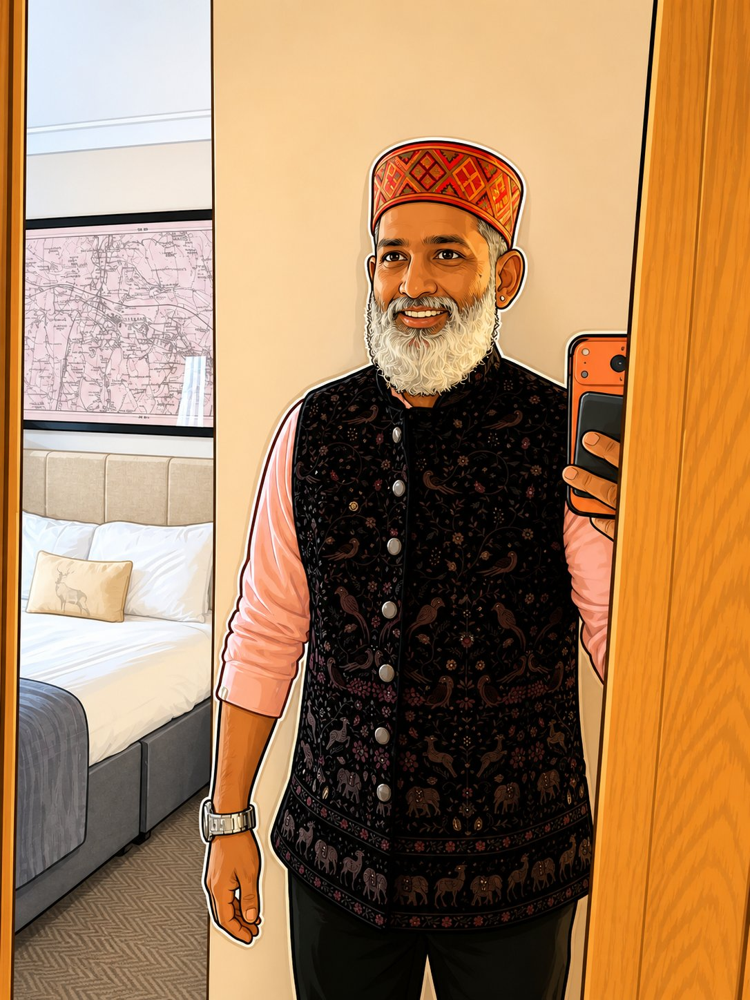

01
Technology & Transformation
Leading product and engineering across India, the UK, and the US. Building AI-first teams that don't trade craft for speed.

Global Technology Director at Travelopia, and India Director for Enchanting Travels, the group's home brand. My work, in one line: be a catalyst for business transformation. I've tried it many times — sometimes it lands, sometimes it half-lands, sometimes it doesn't. I keep going.
I treat life and work as one long experiment — a dreamer correcting the dream as he implements it. Off the clock: Sanskrit, Jyotish, and the older question of what it means to build with intent. Some days the two halves talk to each other. Some days they argue. I write about both.
Leading product and engineering across India, the UK, and the US. Building AI-first teams that don't trade craft for speed.
Trustee at Equal Experts. Advisor at GoSport.in, a foundation in service of athletes. Quiet roles, long horizons.
Essays where dharma meets delivery — on Substack and LinkedIn. Compressed, paradox-tolerant, occasionally Sanskrit.
A partial list. The full one would be a book.
Many more whose names belong in their own essay. Pranams to all — known and unknown, this lifetime and the ones before. Just grateful. Gratitude always.
Two children — Krish (2015) and Neeraja (2019) — who have shaped me more than any book or framework has. My partner Sripriya runs Aevam, a yoga studio.
And currently exploring Auroville — the experimental bioregion near coastal Tamil Nadu — as a possible home. (That's a longer essay, for another day.)
The shift from buying AI tools to rebuilding how we work. Digital coworkers as a serious organisational claim, not a slogan.
Co-authoring on the human side of AI adoption — the part of the change curve no roadmap captures.
Building Kaalapurusha — a modern Jyotish toolchain in Python on the Swiss Ephemeris. Sidereal positions, dasha timelines, classical yogas.
And the daily practice itself: yoga, mantra, the steady work of paying attention.
Swabhāva · Swadharma · Swatanthratha One's own nature · One's own duty · One's own freedom
The scientific mind tests what can be measured.
The Vedic heart sits with what cannot.
I hold them as equal instruments — and refuse to choose between them.